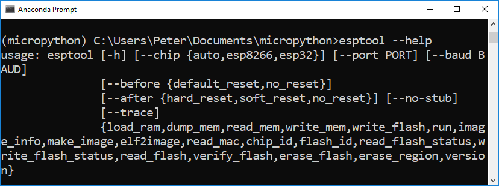
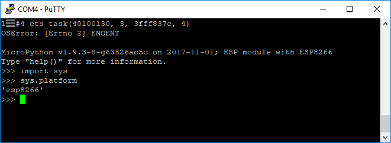

This is the second part of a multipart series on Micropython. Micropython is a port of the Python programming language that runs on small, inexpensive microcontrollers. In this post, we will install Micropython on an Adafruit Feather Huzzah ESP8266 board using Python and a package called esptool. In subsequent posts we will build our Feather Huzzah microcontroller into a WiFi-enabled weather station. The posts in this series:
- What is Micropython?
- Installing Micropython on an Adafruit Feather Huzzah ESP8266 (This post)
- Blink an LED on an Adafruit Feather Huzzah ESP8266 using Micropython
- Read the temperature from a MCP9808 breakout board using Micropyton
- Use Micropython to connect an Adafruit Feather Huzzah to a WiFi network
- Upload Micropython code to turn an Adafruit Feather Huzzah into a WiFi-enabled IoT weather station
To install Micropython on a microcontroller, like the Adafruit Feather Huzzah ESP8266, we need the following hardware:
| Hardware | Purpose |
|---|---|
| Windows 10 Laptop | Used to download Micropython and install Micropython on the microcontroller |
| Adafruit Feather Huzzah ESP8266 | Microcontroller that will run Microphythonn |
| microUSB Cable | Used to connect the laptop to the microcontroller |
To install Micropython we will use the following software and tools:
| Software | Purpose |
|---|---|
| Windows 10 | Download Micropython |
| Anaconda distribution of Python | Run the esptool that installs Micropython |
| Anaconda Prompt | Install the esptool package using pip |
| esptool | a pip installable package used to install Micropython |
| firmware .bin file | the version of Micropython will run on the Feather Huzzah board |
Summary of Steps:
- Install the Anaconda distribution of Python
- Create a new conda environment and
pip install esptool - Download the latest Micropython .bin firmware file
- Install the SiLabs driver for the Adafruit Feather Huzzah ESP8266
- Connect the Adafruit Feather Huzzah ESP8266 board to the laptop using a microUSB cable
- Determine which serial port the Feather Huzzah is connected to
- Run the esptool to upload the .bin firmware file to the Feather Huzzah
- Download and install Putty, a serial monitor
- Use Putty to connect to the Feather Huzzah and run commands in the Micropython REPL
1. Install the Anaconda distribution of Python
If you don't have Anaconda installed already, go to Anaconda.com/download and install the latest version. The Anaconda distribution of Python is the Python distribution I recommend for undergraduate engineers. You want to download and install the Python 3.6 Version (the Python 2.7 Version is legacy Python). Most laptops and desktops run a 64-bit version of Windows 10. If in doubt, you can check your Windows installation, or just go with the 64-bit version.
2. Create a new conda environment and install esptool.py
It's best practice when using Python to work in virtual environments. We'll create a new virtual environment with conda to use with our Micropython projects. Open the Anaconda prompt and create a new virtual environment named micropython. Activate the environment with the conda activate command. After activating the virtual environment you should see (micropython) before the Anaconda Prompt. Once inside the virtual environment, use pip to install esptool. The esptool will be used to upload the Micropython .bin firmware file onto the Adafruit Feather Huzzah board. Confirm that esptool is installed in the (micropython) virtual environment with conda list. I also created a new directory in the Documents folder called micropython to store all the project files.
conda create -n micropython python=3.6
conda activate micropython
(micropython) pip install esptool
(micropython) conda list
(micropython) cd Documents
(micropython) mkdir micropthon
(micropython) cd micropython
3. Download the latest micropython firmware .bin file
Go to github and download the latest .bin firmware file. Move the .bin firmware file to a new micropython directory. The .bin firmware file is the version of Micropython that will run on the Adafruit Feather Huzzah ESP8266. Straight from Adafruit, the little microcontroller does not have Micropyton installed, so we need to install Micropython ourselves. After installing the Micropython .bin firmware file onto the board, we will be able to bring up the Micropython REPL prompt, type commands into the Micropython REPL and run Micropython .py scripts on the board.

4. Install the SiLabs driver for the Adafruit Feather Huzzah ESP8266
Before we can connect the Adafruit Feather Huzzah to the computer, we need a specific driver installed. For my Windows 10 laptop to see the Adafruit Feather Huzzah board, the CP210x USB to UART Bridge VCP driver needs to be downloaded from SiLabs and installed. This is quick and easy, but does require admin privileges.

5. Connect the Adafruit Feather Huzzah ESP8266 board to the laptop
Use a microUSB cable (the same kind of cable that charges many mobile phones) to connect the Feather Huzzah to the computer. Make sure that the microUSB cable is a full USB data cable and not just a simple power cable. I had trouble getting the Feather Huzzah to work, and it turned out the reason was the micoUSB cable was only a charging cable and could not transfer data.
6. Determine which serial port the Feather Huzzah is connected to
Use Windows Device Manager to determine which serial port the Feather Huzzah board is connected to. We will need the serial port as one of the parameters when we upload the .bin firmware file on the board. Look for something like Silicon Labs CP210x USB to UART Bridge (COM4) in the Ports (COM & LPT) menu. The USB to UART bridge is actually the Feather Huzzah board. CP210x refers to the chip that handles serial communication on the Feather Huzzah, not the esp8266 chip itself. Make note of the number after (COM ). It often comes up as (COM4) but it may be different on your computer.


The first time I plugged the board into my laptop, Windows could't see the board. I looked through the Device Manager under the Ports menu and the Feather board just didn't show up. Turns out the first USB cable I used was just a charging only cable. When I switched this out for a microUSB data cable, the board came right up under Ports (COM & LPT).
6. Run esptool to upload the .bin file to the Feather Huzzah
Open the Anaconda Prompt and cd into the micropython directory with the .bin file. You can use the dir command to see the directory contents. Make sure the .bin firmware file is in the directory. It will be called something like esp8266-20171101-v1.9.3.bin. Activate the micropython environment with conda activate micropython. Run esptool --help to ensure esptool is installed properly. Note there is no .py extension after esptool. On my Windows laptop, the command esptool worked, but the command esptool.py did not (this is different than the commands shown on the Micropython docs). If you try to run esptool and you are not in the (micropython) virtual environment, you will get an error.
cd Documents
cd micropython
pwd
Documents/micropython
dir
conda activate micropython
(micropython) esptool --help

Before we write the .bin firmware file to the board, we should first erase the flash memory on the Feather Huzzah using the esptool erase_flash command. Make sure to specify the --port. This is the COM port you found in the Windows Device Manager. In my case the port was COM4.
(micropython) esptool --port COM4 erase_flash

Now it's time to write the .bin firmware file to the flash memory on the board using the esptool write_flash command. Make sure to use the exact .bin firmware file name you see sitting in the micropython directory. The port has to be set as the port you found in the Windows Device Manager. ---baud is the baud rate, or upload speed. I found that --baud 460800 worked, but you could also specify --baud 115200 which is slower. The upload time was a matter of seconds with either baud rate. The 0 after --flash_size=dectect means we want the firmware to be written at the start of the flash memory (the 0th position) on the board. Again, make sure the .bin firmware file name is correct. It is easy to mistype. Another issue I ran into was that I tried to use the command esptool.py instead of esptool as shown on the Micropython docs. The documentation for Micropython on the ESP8266 specifies the command esptool.py (including the .py file extension). This did work on my Windows 10 machine. Omitting the .py file extension, and running esptool worked instead.
(micropython) esptool --port COM4 --baud 460800 write_flash --flash_size=detect 0 esp8266-20171101-v1.9.3.bin

7. Download and install Putty, a serial monitor
Now that Micropthon is installed on the board, we need to talk to our board over a serial connection. Windows 10 doesn't have a built-in serial monitor (like screen on OSX and Linux). So we need to download and install Putty. Putty is a lightweight SSH and serial client for Windows. Putty will allow us to communicate with the Adafruit Feather Huzzah board. Putty can be downloaded here. Putty is pretty small and the download and install should be pretty quick.

8. Use Putty to connect to the Feather Huzzah
Ensure the Feather board is connected to the computer with a USB cable and ensure you can see the board in the Windows Device Manager. Then use Putty to connect to the board over serial. Make sure you specify the correct serial port in the Serial line box and 115200 baud in the Speed box. Micropython is set to run at 115200 baud, other baud rates will lead to junk characters in the serial monitor. I had trouble finding the serial connection option in Putty. When I opened Putty, the default was an SSH connection. We can't connect to the Feather Huzzah over SSH. You need to select the Serial radio button below the header Connection type: near the top of the Putty window.


If you see >>> the Micropython REPL (the Micropython prompt) is running and the Adafruit Feather Huzzah ESP8266 is working! This version of Python isn't running on your computer, it's Micropython running on the little microcontroller! Sometimes I had to type [Enter] or Ctrl-D to get the >>> REPL prompt to show up. A few times I needed to close Putty, unplug then replug the board and try Putty again. The Feather Huzzah also has a tiny little black RESET button that can be pressed to restart the board.

At the >>> Micropython REPL prompt try the following commands:
>>> print('Micropython for Engineers!')
Micropython for Engineers
>>> import sys
>>> sys.platform
'esp8266'

Next steps:
In the next post of the series, we will use the Micropython REPL running on the Adafruit Feather Huzzah to blink an LED.